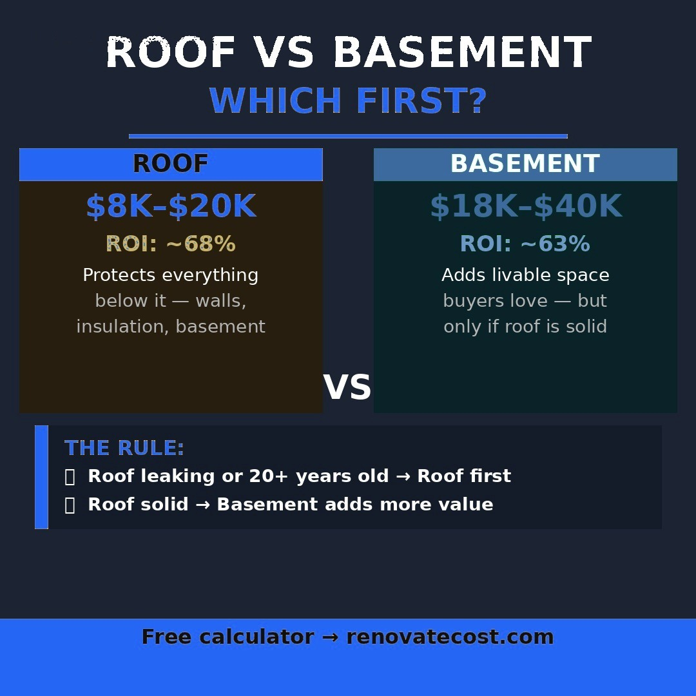

A roof replacement is one of the largest unplanned expenses a homeowner faces — and one of the most confusing to price. Quotes for the same roof can vary by $8,000 or more depending on your contractor, your state, and the materials you choose. This guide gives you the real numbers.

National average: A standard asphalt shingle roof replacement costs $6,500–$22,000 for most US homes. The exact cost depends on your roof size, pitch, material choice, and state. Most homeowners spend around $11,000 for a 1,500 sq ft roof.
Roofing contractors price jobs by the "square" — one roofing square equals 100 square feet. The total cost scales directly with your roof size, but also includes a base callout fee that covers setup, disposal, and labor minimums regardless of size.
| Roof size | Budget (asphalt) | Standard | Premium (metal/tile) |
|---|---|---|---|
| Small (1,000 sq ft) | $4,000–$6,000 | $6,000–$9,000 | $12,000–$22,000 |
| Medium (1,500 sq ft) | $6,500–$10,000 | $9,000–$14,000 | $18,000–$34,000 |
| Large (2,500 sq ft) | $10,000–$16,000 | $15,000–$22,000 | $30,000–$55,000 |
| XL (3,500 sq ft) | $14,000–$22,000 | $21,000–$30,000 | $42,000–$75,000 |
Your material choice is the single biggest cost variable in a roof replacement. Here's how the main options compare on price, lifespan, and long-term value.
The most popular roofing material in the US, installed on about 80% of American homes. 3-tab shingles are the cheapest option. Architectural (dimensional) shingles cost slightly more but last longer and look better. Lifespan: 20–30 years. Best for homeowners prioritizing upfront cost savings.
Standing seam metal roofing lasts 40–70 years with almost zero maintenance. While the upfront cost is 2–3x asphalt, the lifetime cost is often lower when you factor in replacement cycles. Metal roofs also reflect heat, reducing cooling costs by 10–25% in hot climates. Best long-term ROI of any roofing material.
Clay tile, concrete tile, and natural slate are premium options that last 50–100 years. The main drawbacks are weight — many homes require structural reinforcement — and cost. Slate in particular can exceed $40/sq ft in some markets. Best for high-end homes in warm climates where tile is common.
Cedar shakes offer excellent insulation and a classic look. They require more maintenance than other materials and are not allowed in some fire-risk areas. Lifespan: 20–30 years with proper maintenance.
| Material | Cost per sq ft | Lifespan | Best for |
|---|---|---|---|
| Asphalt shingles | $3–$5 | 20–30 years | Budget-conscious homeowners |
| Architectural shingles | $4–$7 | 25–35 years | Best value asphalt option |
| Metal (standing seam) | $7–$14 | 40–70 years | Best long-term ROI |
| Wood shakes | $6–$10 | 20–30 years | Aesthetic preference |
| Clay tile | $10–$20 | 50+ years | Warm climate homes |
| Natural slate | $20–$40 | 75–150 years | Premium homes |
Labor costs vary significantly by state — the same roof replacement can cost $5,000 more in a high-labor-cost state like California or New York compared to Mississippi or Arkansas.
| State | 1,500 sq ft asphalt roof | vs national average |
|---|---|---|
| California | $12,000–$19,000 | +38% |
| New York | $11,500–$18,000 | +32% |
| Massachusetts | $11,000–$17,500 | +28% |
| Texas | $7,500–$12,500 | avg |
| Florida | $7,800–$13,000 | avg |
| Ohio | $7,000–$11,500 | -10% |
| Mississippi | $5,500–$9,500 | -22% |
A legitimate roof replacement quote should always include the following. If any of these are missing, ask your contractor explicitly before signing.
Watch out for: Quotes that exclude underlayment, flashing replacement, or permit fees. These are not optional — a roof installed without proper flashing will leak within 2–5 years. Always ask for an itemized quote.
Even with a detailed quote, roof replacements often come in higher than expected due to issues discovered during the project.
A new roof returns approximately 55–65% of its cost at resale according to Remodeling Magazine's annual Cost vs. Value report. More importantly, an aging or damaged roof actively reduces your home's value and can kill a sale entirely — buyers and inspectors flag roofs with less than 5 years of remaining life.
The real ROI of a roof replacement is often better measured in avoided losses than direct returns. A roof that costs $10,000 to replace may prevent $40,000 in sale price reductions or failed inspections.
Enter your roof size and state for a free instant estimate adjusted to your local market.
Calculate My Roof Cost →Most residential roof replacements take 1–3 days depending on size and complexity. Large or steep roofs may take up to 5 days. Weather delays are common — most contractors will not work in rain or high winds.
In most US jurisdictions, a full roof replacement requires a permit. Cosmetic repairs (replacing a few shingles) typically do not. Always check with your local building department before work begins — unpermitted work can cause issues when you sell.
Technically yes, but it is not recommended. Roofing is physically dangerous, and improper installation voids manufacturer warranties. Most homeowner insurance policies also require professional installation for coverage to remain valid.
General rule: if your roof is under 15 years old with localized damage, repair is usually cost-effective. If it is over 20 years old, has widespread granule loss, or has multiple leak points, replacement is almost always the better investment.